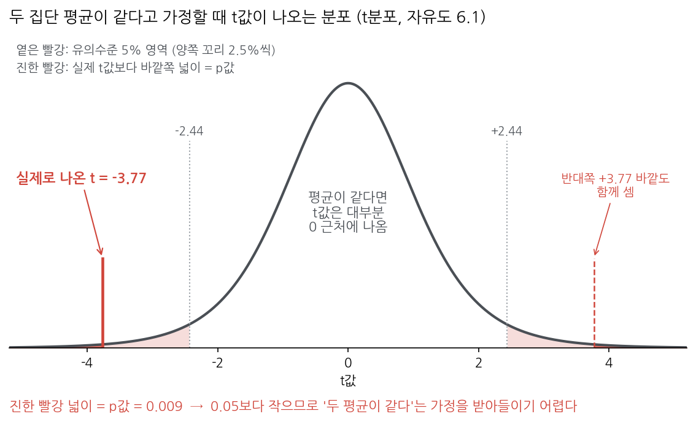
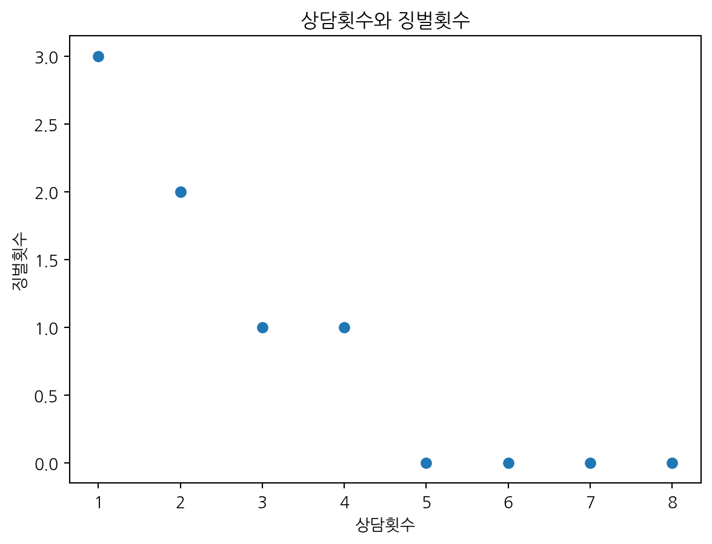
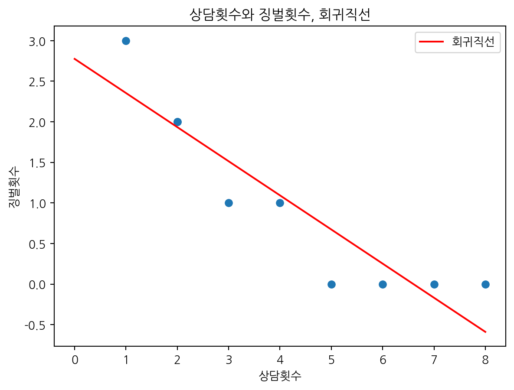
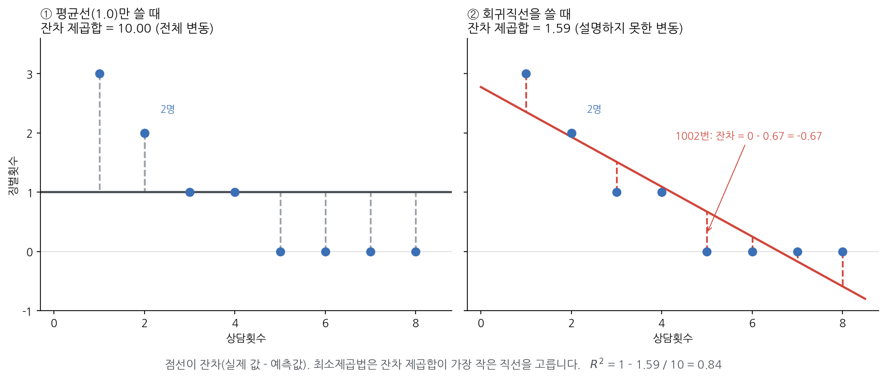
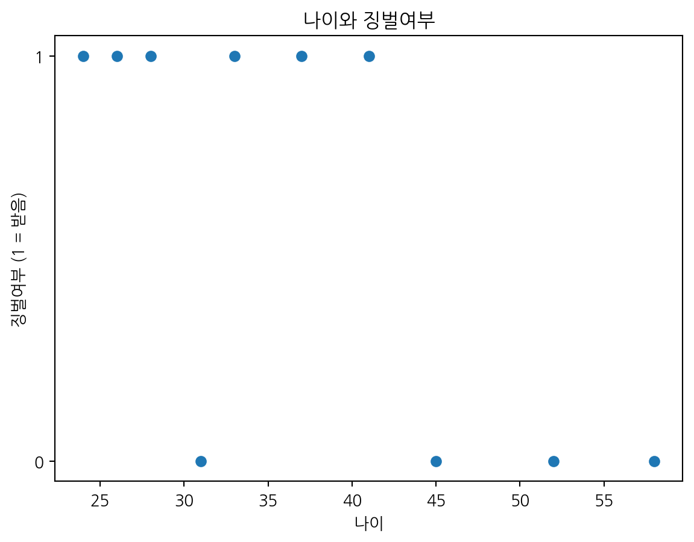
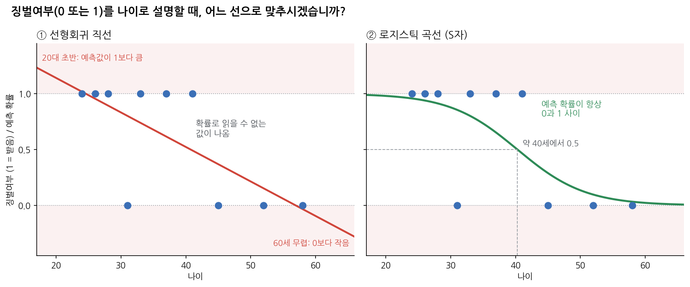
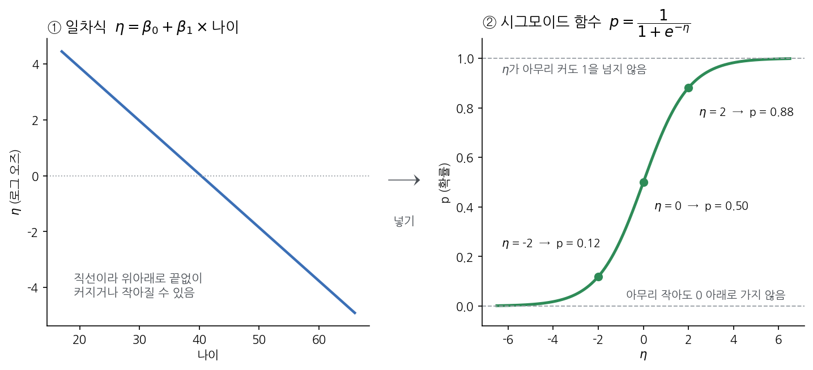

!apt-get -qq install -y fonts-nanum > /dev/null4. 기초통계와 회귀
이 장에서는 기술통계, 교차표, 두 집단 평균 비교, 선형회귀, 로지스틱 회귀를 실행해 봅니다. 실습 데이터가 10명뿐이라 결과의 통계적 의미보다는 코드가 어떻게 돌아가고 결과표를 어디서 읽는지에 집중합니다.
4.1 준비
이 장에서도 그래프를 그리므로 3장처럼 한글 글꼴을 먼저 설치합니다.
import numpy as np
import pandas as pd
import matplotlib.pyplot as plt
from matplotlib import font_manager as fm
from scipy import stats
import statsmodels.formula.api as smf
fm.fontManager.addfont("/usr/share/fonts/truetype/nanum/NanumGothic.ttf")
plt.rcParams["font.family"] = "NanumGothic"
plt.rcParams["axes.unicode_minus"] = False
주소 = "https://raw.githubusercontent.com/StatJeong/moj-python-lecture/main/data/"
수용자 = pd.read_csv(주소 + "inmates.csv")
수용자["징벌여부"] = (수용자["징벌횟수"] > 0).astype(int)4.2 기술통계
수용자[["나이", "형기_개월", "상담횟수", "징벌횟수"]].describe().round(2)| 나이 | 형기_개월 | 상담횟수 | 징벌횟수 | |
|---|---|---|---|---|
| count | 10.00 | 10.00 | 9.00 | 10.00 |
| mean | 37.50 | 30.60 | 4.22 | 1.00 |
| std | 11.38 | 15.97 | 2.44 | 1.05 |
| min | 24.00 | 10.00 | 1.00 | 0.00 |
| 25% | 28.75 | 21.00 | 2.00 | 0.00 |
| 50% | 35.00 | 27.00 | 4.00 | 1.00 |
| 75% | 44.00 | 40.50 | 6.00 | 1.75 |
| max | 58.00 | 60.00 | 8.00 | 3.00 |
| 행 | 뜻 |
|---|---|
| count | 값이 있는 칸 수 (상담횟수는 결측 1개로 9) |
| mean, std | 평균, 표준편차 |
| min, max | 최솟값, 최댓값 |
| 25%, 50%, 75% | 사분위수 (50%가 중앙값) |
평균과 중앙값을 따로 구할 수도 있습니다.
print(수용자["나이"].mean())
print(수용자["나이"].median())37.5
35.0같은 10명, 다른 파일
아래 inmates_check.csv는 위와 같은 10명의 자료를 따로 입력한 파일입니다. 같은 방법으로 기술통계를 봅니다.
점검 = pd.read_csv(주소 + "inmates_check.csv")
점검[["나이", "형기_개월", "상담횟수", "징벌횟수"]].describe().round(2)| 나이 | 형기_개월 | 상담횟수 | 징벌횟수 | |
|---|---|---|---|---|
| count | 10.00 | 10.00 | 9.00 | 10.00 |
| mean | 62.70 | 128.10 | 3.89 | 1.00 |
| std | 77.12 | 306.41 | 2.93 | 1.05 |
| min | 24.00 | 10.00 | -1.00 | 0.00 |
| 25% | 31.50 | 21.00 | 2.00 | 0.00 |
| 50% | 39.00 | 33.00 | 4.00 | 1.00 |
| 75% | 50.25 | 46.50 | 6.00 | 1.75 |
| max | 280.00 | 999.00 | 8.00 | 3.00 |
이 결과에는 실제로 있을 수 없는 값이 세 개 있습니다.
| 열 | 이상한 점 | 실제 값 |
|---|---|---|
| 나이 | max가 280 |
1004번의 28을 280으로 잘못 입력 |
| 형기_개월 | max가 999 |
1003번의 형기를 모른다는 뜻으로 999를 적음 |
| 상담횟수 | min이 -1 |
1009번의 횟수가 음수 |
잘못된 값을 가진 행은 2장의 조건 고르기로 찾을 수 있습니다.
print(점검[점검["나이"] > 100][["수용번호", "나이"]])
print(점검[점검["형기_개월"] > 900][["수용번호", "형기_개월"]])
print(점검[점검["상담횟수"] < 0][["수용번호", "상담횟수"]]) 수용번호 나이
3 1004 280
수용번호 형기_개월
2 1003 999
수용번호 상담횟수
8 1009 -1.0값 하나가 평균을 얼마나 흔드는지 원래 데이터와 비교해 봅니다.
| 원래 데이터 | 이 파일 | |
|---|---|---|
| 나이 평균 / 중앙값 | 37.5 / 35.0 | 62.7 / 39.0 |
| 형기 평균 / 중앙값 | 30.6 / 27.0 | 128.1 / 33.0 |
평균은 잘못된 값 하나에 크게 흔들리고, 중앙값은 덜 흔들립니다. 평균 형기 128개월(약 10년 8개월)이라는 숫자만 보고 보고서를 쓰면 그대로 틀린 결론이 나옵니다. 그래서 기술통계는 분석 결과이기 전에, 데이터가 제대로 입력됐는지 확인하는 첫 단계로도 씁니다.
describe()에서 볼 곳 |
확인할 것 |
|---|---|
min, max |
있을 수 없는 값이 있는지 (음수, 터무니없이 큰 값) |
mean과 50% |
평균이 중앙값에서 크게 벗어나면 극단적인 값이 섞였을 수 있음 |
count |
빈칸이 몇 개인지 (전체 행 수와 비교) |
경고’모름’을 숫자로 적는 관행
업무 데이터에서는 값을 모를 때 빈칸 대신 999, 9999, -1, 0 같은 숫자를 적는 경우가 많습니다. 파이썬은 이것을 진짜 숫자로 보고 평균과 회귀에 그대로 넣습니다. 분석 전에 describe()로 최솟값과 최댓값부터 확인하고, 이런 약속 숫자가 있는지 자료를 만든 부서에 물어봅니다.
잘못된 값을 고치거나 빼는 방법은 5장에서 AI에게 물어보며 다룹니다.
4.3 교차표
범주형 변수 두 개의 관계는 교차표로 봅니다.
pd.crosstab(수용자["직업훈련"], 수용자["징벌여부"], margins=True)| 징벌여부 | 0 | 1 | All |
|---|---|---|---|
| 직업훈련 | |||
| N | 0 | 5 | 5 |
| Y | 4 | 1 | 5 |
| All | 4 | 6 | 10 |
행마다의 비율로 보려면 normalize="index"를 씁니다.
pd.crosstab(수용자["직업훈련"], 수용자["징벌여부"], normalize="index").round(2)| 징벌여부 | 0 | 1 |
|---|---|---|
| 직업훈련 | ||
| N | 0.0 | 1.0 |
| Y | 0.8 | 0.2 |
4.4 두 집단 평균 비교 (t-검정)
직업훈련 참여자와 비참여자의 평균 징벌횟수를 비교합니다.
참여 = 수용자[수용자["직업훈련"] == "Y"]["징벌횟수"]
비참여 = 수용자[수용자["직업훈련"] == "N"]["징벌횟수"]
print("참여 평균:", 참여.mean())
print("비참여 평균:", 비참여.mean())
결과 = stats.ttest_ind(참여, 비참여, equal_var=False)
print(결과)참여 평균: 0.2
비참여 평균: 1.8
TtestResult(statistic=np.float64(-3.7712361663282534), pvalue=np.float64(0.008959014403392149), df=np.float64(6.113207547169811))결과의 statistic이 t값(-3.77), pvalue가 p값(0.009), df가 자유도(6.1)입니다.
t값과 p값을 그림으로 보기
t값은 두 평균의 차이가 표준오차의 몇 배인지 나타낸 값입니다. 집단마다의 분산(참여 0.2, 비참여 0.7, 참여.var()로 확인)과 사람 수(5명씩)를 넣어 계산하면 결과의 statistic과 같습니다.
\[ t = \frac{\bar{x}_{\text{참여}} - \bar{x}_{\text{비참여}}}{\sqrt{\dfrac{s_{\text{참여}}^2}{n_{\text{참여}}} + \dfrac{s_{\text{비참여}}^2}{n_{\text{비참여}}}}} = \frac{0.2 - 1.8}{\sqrt{\dfrac{0.2}{5} + \dfrac{0.7}{5}}} = \frac{-1.6}{\sqrt{0.18}} = \frac{-1.6}{0.4243} \approx -3.77 \]
검정은 다음 순서로 판단합니다.
- 먼저 “두 집단의 평균 징벌횟수가 같다”고 가정합니다(귀무가설).
- 이 가정이 맞다면 t값은 대부분 0 근처에 나오고, 0에서 멀수록 드물게 나옵니다. 그 모양이 아래 그림의 t분포입니다. 정규분포와 비슷한 종 모양이고, 사람 수가 적을수록 꼬리가 조금 더 두껍습니다.
- 실제로 나온 t = -3.77은 분포의 왼쪽 끝에 있습니다. 이보다 더 바깥쪽 값(-3.77보다 작거나 +3.77보다 큰 값)이 나올 확률이 p값이고, 그림의 진한 빨강 넓이(0.009)입니다.
- p값 0.009는 기준인 0.05(5%)보다 작습니다. 평균이 같다면 이만큼 큰 차이는 100번 중 1번도 나오기 어렵다는 뜻이므로, 처음의 가정을 버리고 두 평균이 다르다고 판단합니다.

경고p값을 읽을 때 흔한 오해
- p값은 ’두 평균이 같을 확률’이 아닙니다. 평균이 같다고 가정했을 때 지금만큼(또는 그보다 더) 큰 차이가 나올 확률입니다.
- p값이 0.05보다 크다고 해서 두 평균이 같다는 증거가 되지는 않습니다. 차이를 확인하기에는 자료가 부족하다는 뜻일 수도 있습니다.
- 0.05라는 기준은 관례입니다. 집단마다 5명뿐인 이 결과는 연습용으로만 봅니다.
힌트직접 움직여 보기
R Psychologist: p값 시뮬레이션과 유의성 검정과 검정력에서 표본 크기와 유의수준을 바꿔 가며 분포와 기각 영역이 어떻게 달라지는지 볼 수 있습니다(영어 사이트).
4.5 선형회귀
상담횟수가 많을수록 징벌횟수가 어떻게 달라지는지 봅니다.
먼저 그려 보기
3장 3.4절에서 그린 산점도를 다시 그립니다.
plt.scatter(수용자["상담횟수"], 수용자["징벌횟수"])
plt.title("상담횟수와 징벌횟수")
plt.xlabel("상담횟수")
plt.ylabel("징벌횟수")
plt.show()
점들이 오른쪽 아래로 내려가는 직선 근처에 모여 있습니다(상담 2회·징벌 2회 자리에는 두 명이 겹쳐 있습니다). 이 경향을 직선 하나로 나타내 보려고 합니다. 직선의 식을 정하고, 데이터에 가장 잘 맞는 기울기와 절편을 찾는 것(적합)이 선형회귀입니다.
모형식
수용자 \(i\)의 징벌횟수를 상담횟수의 일차식과, 그 식으로 설명되지 않는 나머지로 나누어 씁니다.
\[ \text{징벌횟수}_i = \beta_0 + \beta_1 \times \text{상담횟수}_i + \varepsilon_i, \qquad i = 1, 2, \dots, n \]
| 기호 | 뜻 |
|---|---|
| \(\beta_0\) | 절편. 상담횟수가 0일 때의 평균 징벌횟수 |
| \(\beta_1\) | 기울기. 상담횟수가 1회 늘 때 평균 징벌횟수가 변하는 양 |
| \(\varepsilon_i\) | 오차. 상담횟수로 설명되지 않는 나머지 (평균 0) |
| \(n\) | 분석에 쓰인 사람 수 |
\(\beta_0\), \(\beta_1\)은 모르는 값이고, 데이터로 추정한 값은 \(b_0\), \(b_1\)로 씁니다.
파이썬에서는 이 모형식을 "징벌횟수 ~ 상담횟수"로 줄여 씁니다. ~ 왼쪽이 결과, 오른쪽이 설명변수이고, 절편(\(\beta_0\))과 오차(\(\varepsilon_i\))는 따로 적지 않아도 자동으로 들어갑니다.
실행과 결과표
모형1 = smf.ols("징벌횟수 ~ 상담횟수", data=수용자).fit()
print(모형1.summary()) OLS Regression Results
==============================================================================
Dep. Variable: 징벌횟수 R-squared: 0.841
Model: OLS Adj. R-squared: 0.818
Method: Least Squares F-statistic: 37.06
Date: Wed, 11 Nov 2026 Prob (F-statistic): 0.000497
Time: 22:11:25 Log-Likelihood: -4.9663
No. Observations: 9 AIC: 13.93
Df Residuals: 7 BIC: 14.33
Df Model: 1
Covariance Type: nonrobust
==============================================================================
coef std err t P>|t| [0.025 0.975]
------------------------------------------------------------------------------
Intercept 2.7757 0.332 8.358 0.000 1.990 3.561
상담횟수 -0.4206 0.069 -6.088 0.000 -0.584 -0.257
==============================================================================
Omnibus: 0.147 Durbin-Watson: 1.862
Prob(Omnibus): 0.929 Jarque-Bera (JB): 0.345
Skew: 0.030 Prob(JB): 0.842
Kurtosis: 2.043 Cond. No. 10.4
==============================================================================
Notes:
[1] Standard Errors assume that the covariance matrix of the errors is correctly specified.결과표에서 볼 곳은 다음과 같습니다.
| 위치 | 기호 | 뜻 |
|---|---|---|
No. Observations |
\(n\) | 분석에 쓰인 관측치 수 |
Intercept 줄의 coef |
\(b_0\) | 절편의 추정값 (2.7757) |
상담횟수 줄의 coef |
\(b_1\) | 기울기의 추정값 (-0.4206) |
std err |
추정값의 표준오차 | |
| P>|t| | 계수가 0인지 검정한 p값 | |
R-squared |
\(R^2\) | 모형이 설명하는 변동의 비율 |
관측치 수가 10이 아니라 9입니다. 상담횟수가 비어 있는 1007번이 자동으로 빠졌기 때문입니다. 계수만 따로 꺼낼 수도 있습니다.
print(모형1.nobs)
print(모형1.params)9.0
Intercept 2.775701
상담횟수 -0.420561
dtype: float64결과표의 coef를 모형식의 \(\beta_0\), \(\beta_1\) 자리에 넣으면 추정된 식이 됩니다.
\[ \widehat{\text{징벌횟수}} = 2.776 - 0.421 \times \text{상담횟수} \]
모자 기호(^)는 실제 값이 아니라 식으로 계산한 예측값이라는 표시입니다. 오차 \(\varepsilon_i\)는 평균이 0이므로 예측식에는 쓰지 않습니다.
상담횟수의 계수가 음수이므로, 이 데이터에서는 상담횟수가 1회 많을수록 징벌횟수가 평균 약 0.42회 적습니다. 이것은 함께 움직이는 관계(연관)이고, 상담이 징벌을 줄였다는 인과관계를 뜻하지는 않습니다.
회귀직선 그리기
추정된 식을 산점도 위에 직선으로 겹쳐 그립니다. 직선은 두 점만 있으면 그릴 수 있으므로, 상담 0회와 8회일 때의 예측값을 계산해 두 점을 잇습니다.
b0 = 모형1.params["Intercept"]
b1 = 모형1.params["상담횟수"]
plt.scatter(수용자["상담횟수"], 수용자["징벌횟수"])
plt.plot([0, 8], [b0 + b1 * 0, b0 + b1 * 8], color="red", label="회귀직선")
plt.title("상담횟수와 징벌횟수, 회귀직선")
plt.xlabel("상담횟수")
plt.ylabel("징벌횟수")
plt.legend()
plt.show()
| 그림에서 | 식에서 |
|---|---|
| 상담 0회에서 직선이 지나는 높이 (2.78) | 절편 \(b_0\) |
| 오른쪽으로 1칸 갈 때 직선이 내려가는 양 (0.42) | 기울기 \(b_1\) |
| 점과 직선 사이의 세로 거리 | 잔차 (아래에서 설명) |
노트직선은 0 아래로도 내려갑니다
상담 7회 이상에서는 예측값이 0보다 작아집니다(7회: -0.17). 징벌횟수는 음수가 될 수 없으므로, 이 직선은 데이터가 있는 범위에서 대략적인 경향을 보는 용도로 읽습니다. 결과가 0 또는 1뿐인 경우에는 이 문제가 더 커지는데, 4.6절의 로지스틱 회귀가 그 해결 방법입니다.
힌트식 안에 숫자로 시작하거나 띄어쓰기가 있는 열 이름
smf.ols("수용률 ~ 1일평균수용인원", ...)처럼 숫자로 시작하는 열 이름을 식에 그대로 쓰면 SyntaxError: invalid syntax가 납니다. 열 이름을 Q("...")로 감쌉니다.
smf.ols('수용률 ~ Q("1일평균수용인원")', data=표).fit()띄어쓰기가 있는 열 이름도 같은 방법으로 씁니다.
예측값과 잔차
추정된 식에 상담횟수를 넣으면 예측값이 나옵니다. 상담을 5회 받은 사람의 예측 징벌횟수는 다음과 같습니다(반올림 차이를 줄이려고 소수 다섯째 자리까지 씁니다).
\[ \begin{aligned} \widehat{\text{징벌횟수}} &= 2.77570 - 0.42056 \times 5 \\ &= 2.77570 - 2.10280 \\ &= 0.67290 \end{aligned} \]
print(b0 + b1 * 5) # 위에서 꺼내 둔 b0, b1을 그대로 씀0.67289719626168281002번은 상담 5회, 징벌 0회입니다. 실제 값에서 예측값을 뺀 것을 잔차라고 합니다.
\[ \text{잔차} = \text{실제 값} - \text{예측값} = 0 - 0.6729 = -0.6729 \]
계수를 정하는 방법: 최소제곱법
상담횟수를 \(x_i\), 징벌횟수를 \(y_i\)라고 쓰겠습니다. \(b_0\), \(b_1\)은 잔차를 제곱해 더한 값(SSE)이 가장 작아지도록 정합니다.
\[ \text{SSE}(b_0, b_1) = \sum_{i=1}^{n} \left( y_i - b_0 - b_1 x_i \right)^2 \]
아래 그림의 점선이 잔차입니다. ①처럼 모든 사람을 평균(1.0)으로 예측하면 잔차 제곱합이 10이고, ②의 회귀직선으로 예측하면 1.59로 줄어듭니다. 최소제곱법은 그을 수 있는 모든 직선 가운데 이 값이 가장 작은 직선을 고릅니다.

힌트직접 움직여 보기
Seeing Theory: 회귀분석에서 점을 끌어 옮기면 최소제곱 직선과 잔차 제곱합(SSE)이 어떻게 바뀌는지 볼 수 있습니다. MLU-Explain: 선형회귀는 같은 내용을 그림으로 차례차례 설명합니다(둘 다 영어 사이트).
이 값을 가장 작게 만드는 \(b_0\), \(b_1\)은 다음과 같습니다(\(\bar{x}\), \(\bar{y}\)는 평균).
\[ b_1 = \frac{\sum_{i=1}^{n} (x_i - \bar{x})(y_i - \bar{y})}{\sum_{i=1}^{n} (x_i - \bar{x})^2}, \qquad b_0 = \bar{y} - b_1 \bar{x} \]
노트공식을 유도하는 과정 (펼쳐 보기)
1단계: \(b_0\)에 대해 미분해 0으로 놓기
SSE가 가장 작은 곳에서는 \(b_0\)에 대한 기울기(미분)가 0입니다. 제곱을 미분하면 \(2 \times (\text{안쪽}) \times (\text{안쪽을 } b_0\text{로 미분한 값} = -1)\)입니다.
\[ \begin{aligned} \frac{\partial\, \text{SSE}}{\partial b_0} = \sum_{i=1}^{n} 2\left( y_i - b_0 - b_1 x_i \right)(-1) &= 0 \\ \sum_{i=1}^{n} \left( y_i - b_0 - b_1 x_i \right) &= 0 && (\text{양변을 } {-2}\text{로 나눔}) \\ \sum y_i - n b_0 - b_1 \sum x_i &= 0 && (\textstyle\sum b_0 = n b_0) \\ \bar{y} - b_0 - b_1 \bar{x} &= 0 && (\text{양변을 } n\text{으로 나눔}) \\ b_0 &= \bar{y} - b_1 \bar{x} \end{aligned} \]
2단계: \(b_1\)에 대해 미분해 0으로 놓기
이번에는 안쪽을 \(b_1\)로 미분한 값이 \(-x_i\)입니다.
\[ \begin{aligned} \frac{\partial\, \text{SSE}}{\partial b_1} = \sum_{i=1}^{n} 2\left( y_i - b_0 - b_1 x_i \right)(-x_i) &= 0 \\ \sum_{i=1}^{n} x_i \left( y_i - b_0 - b_1 x_i \right) &= 0 \end{aligned} \]
1단계의 \(b_0 = \bar{y} - b_1 \bar{x}\)를 넣으면 괄호 안이 \(y_i - \bar{y} + b_1 \bar{x} - b_1 x_i = (y_i - \bar{y}) - b_1 (x_i - \bar{x})\)가 됩니다.
\[ \begin{aligned} \sum x_i \left\{ (y_i - \bar{y}) - b_1 (x_i - \bar{x}) \right\} &= 0 \\ \sum x_i (y_i - \bar{y}) &= b_1 \sum x_i (x_i - \bar{x}) \end{aligned} \]
3단계: \(x_i\)를 \((x_i - \bar{x})\)로 바꾸기
편차의 합은 0입니다: \(\sum (y_i - \bar{y}) = \sum y_i - n\bar{y} = 0\). 그래서 \(\bar{x} \sum (y_i - \bar{y}) = 0\)을 빼도 값이 같습니다.
\[ \sum x_i (y_i - \bar{y}) = \sum x_i (y_i - \bar{y}) - \bar{x} \sum (y_i - \bar{y}) = \sum (x_i - \bar{x})(y_i - \bar{y}) \]
같은 방법으로 \(\sum x_i (x_i - \bar{x}) = \sum (x_i - \bar{x})^2\)입니다. 2단계 식의 양변을 바꿔 쓰고 \(\sum (x_i - \bar{x})^2\)로 나누면 다음과 같습니다.
\[ b_1 = \frac{\sum (x_i - \bar{x})(y_i - \bar{y})}{\sum (x_i - \bar{x})^2} \]
4단계: 실습 데이터의 숫자 넣기
상담횟수가 있는 9명의 값은 다음과 같습니다.
| 1001 | 1002 | 1003 | 1004 | 1005 | 1006 | 1008 | 1009 | 1010 | 합계 | |
|---|---|---|---|---|---|---|---|---|---|---|
| \(x_i\) (상담) | 2 | 5 | 6 | 1 | 8 | 3 | 4 | 2 | 7 | 38 |
| \(y_i\) (징벌) | 2 | 0 | 0 | 3 | 0 | 1 | 1 | 2 | 0 | 9 |
| \(x_i y_i\) | 4 | 0 | 0 | 3 | 0 | 3 | 4 | 4 | 0 | 18 |
| \(x_i^2\) | 4 | 25 | 36 | 1 | 64 | 9 | 16 | 4 | 49 | 208 |
평균은 \(\bar{x} = 38/9\), \(\bar{y} = 9/9 = 1\)입니다. 괄호를 풀면 \(\sum (x_i - \bar{x})(y_i - \bar{y}) = \sum x_i y_i - \bar{y}\sum x_i - \bar{x}\sum y_i + n\bar{x}\bar{y} = \sum x_i y_i - n\bar{x}\bar{y}\)이고, 같은 방법으로 \(\sum (x_i - \bar{x})^2 = \sum x_i^2 - n\bar{x}^2\)입니다.
\[ \begin{aligned} \sum (x_i - \bar{x})(y_i - \bar{y}) &= 18 - 9 \times \frac{38}{9} \times 1 = 18 - 38 = -20 \\ \sum (x_i - \bar{x})^2 &= 208 - 9 \times \left(\frac{38}{9}\right)^2 = 208 - \frac{1444}{9} = \frac{428}{9} \\ b_1 &= \frac{-20}{428/9} = -\frac{180}{428} = -\frac{45}{107} \approx -0.42056 \\ b_0 &= 1 - \left(-\frac{45}{107}\right) \times \frac{38}{9} = 1 + \frac{190}{107} = \frac{297}{107} \approx 2.77570 \end{aligned} \]
결과표의 coef(2.7757, -0.4206)와 같습니다.
공식을 pandas로 그대로 계산해 결과표의 계수와 비교해 봅니다.
자료 = 수용자.dropna() # 빈칸이 있는 1007번을 뺀 9명
x = 자료["상담횟수"]
y = 자료["징벌횟수"]
b1 = ((x - x.mean()) * (y - y.mean())).sum() / ((x - x.mean()) ** 2).sum()
b0 = y.mean() - b1 * x.mean()
print("b0:", b0)
print("b1:", b1)b0: 2.7757009345794392
b1: -0.4205607476635514결정계수(R²)
\(R^2\)는 징벌횟수의 전체 변동 가운데 식이 설명하는 비율입니다.
\[ R^2 = 1 - \frac{\sum (y_i - \hat{y}_i)^2}{\sum (y_i - \bar{y})^2} = 1 - \frac{\text{식으로 설명하지 못한 변동}}{\text{전체 변동}} \]
위 잔차 그림의 ①이 전체 변동, ②가 설명하지 못한 변동입니다. 이 데이터에서는 전체 변동이 \(\sum (y_i - \bar{y})^2 = 10\), 설명하지 못한 변동이 약 1.589라서 \(R^2 = 1 - 1.589 / 10 = 0.841\)입니다. 징벌횟수 변동의 약 84%를 상담횟수의 일차식으로 설명한다는 뜻입니다. 9명뿐인 연습용 데이터라 실제 업무 자료에서는 이렇게 높게 나오기 어렵습니다.
4.6 로지스틱 회귀
결과가 0 / 1인 경우(징벌을 받았는지 여부)에는 로지스틱 회귀를 씁니다.
먼저 그려 보기
나이와 징벌여부(받았으면 1, 아니면 0)를 산점도로 그립니다.
plt.scatter(수용자["나이"], 수용자["징벌여부"])
plt.yticks([0, 1])
plt.title("나이와 징벌여부")
plt.xlabel("나이")
plt.ylabel("징벌여부 (1 = 받음)")
plt.show()
점이 0과 1 두 줄에만 찍힙니다. 젊은 쪽은 대부분 1, 나이가 많은 쪽은 0입니다.
직선으로 맞출까, S자 곡선으로 맞출까
이 점들에 선을 하나 맞춘다면 어느 쪽이 좋을까요?

①처럼 4.5절의 선형회귀 직선으로 맞추면 20세에서 예측값이 1.14로 1을 넘고, 60세에서는 -0.09로 0보다 작아집니다. 징벌을 받을 확률로는 읽을 수 없는 값입니다. ②처럼 0과 1 사이에서 S자로 꺾이는 곡선으로 맞추면 예측값을 그대로 확률로 읽을 수 있습니다. 이 S자 곡선으로 맞추는 방법이 로지스틱 회귀입니다.
시그모이드 함수
S자 곡선은 시그모이드 함수(로지스틱 함수라고도 함)로 만듭니다. 나이의 일차식 \(\eta\)(①, 직선)를 시그모이드 함수에 넣으면(②) 결과가 언제나 0과 1 사이에 들어옵니다.

\[ p_i = \frac{1}{1 + e^{-\eta_i}}, \qquad \eta_i = \beta_0 + \beta_1 \times \text{나이}_i \]
- \(\eta = 0\)이면 \(e^{0} = 1\)이므로 \(p = \dfrac{1}{1 + 1} = 0.5\)입니다.
- \(\eta\)가 클수록 \(e^{-\eta}\)가 0에 가까워져 \(p\)는 1에 가까워집니다. 1을 넘지는 않습니다.
- \(\eta\)가 작을수록(음수 쪽으로 갈수록) \(e^{-\eta}\)가 커져 \(p\)는 0에 가까워집니다. 0 아래로 가지는 않습니다.
힌트직접 움직여 보기
MLU-Explain: 로지스틱 회귀에서 데이터에 시그모이드 곡선이 맞춰지는 과정을 그림으로 볼 수 있습니다(영어 사이트).
모형식: 로그 오즈로 쓰기
시그모이드 식을 일차식 \(\eta\)에 대해 풀면 로지스틱 회귀의 모형식이 나옵니다.
\[ \begin{aligned} p &= \frac{1}{1 + e^{-\eta}} \\ 1 - p &= 1 - \frac{1}{1 + e^{-\eta}} = \frac{(1 + e^{-\eta}) - 1}{1 + e^{-\eta}} = \frac{e^{-\eta}}{1 + e^{-\eta}} && (\text{통분}) \\ \frac{p}{1 - p} &= \frac{1}{1 + e^{-\eta}} \times \frac{1 + e^{-\eta}}{e^{-\eta}} = \frac{1}{e^{-\eta}} = e^{\eta} && (1 + e^{-\eta} \text{가 약분됨}) \\ \log \frac{p}{1 - p} &= \eta && (\text{양변에 자연로그}) \end{aligned} \]
그래서 수용자 \(i\)가 징벌을 받을 확률을 \(p_i\)라고 하면 모형식은 다음과 같습니다.
\[ \log \frac{p_i}{1 - p_i} = \beta_0 + \beta_1 \times \text{나이}_i \]
| 기호 | 뜻 |
|---|---|
| \(p_i\) | 징벌을 받을 확률 (0과 1 사이) |
| \(\dfrac{p_i}{1-p_i}\) | 오즈. 받을 확률이 안 받을 확률의 몇 배인지. 예: \(p = 0.8\)이면 \(0.8 / 0.2 = 4\) |
| \(\log \dfrac{p_i}{1-p_i}\) | 로그 오즈. 오즈에 자연로그(\(e\)를 밑으로 하는 로그)를 씌운 값 |
확률 \(p\)는 0과 1 사이에 갇혀 있지만, 로그 오즈는 음수부터 양수까지 어떤 값이든 될 수 있어서 일차식(직선)과 같다고 놓을 수 있습니다. 시그모이드 그림의 ①이 로그 오즈의 직선, ②가 그것을 확률로 바꾼 곡선입니다.
실행과 결과표
노트실행 결과 위에 나오는 Optimization terminated successfully
로지스틱 회귀의 .fit()은 계산 과정을 몇 줄 출력합니다. 오류가 아니라 계산이 끝났다는 안내입니다. 보이지 않게 하려면 .fit(disp=0)을 씁니다.
모형2 = smf.logit("징벌여부 ~ 나이", data=수용자).fit()
print(모형2.summary())Optimization terminated successfully.
Current function value: 0.401800
Iterations 7
Logit Regression Results
==============================================================================
Dep. Variable: 징벌여부 No. Observations: 10
Model: Logit Df Residuals: 8
Method: MLE Df Model: 1
Date: Wed, 11 Nov 2026 Pseudo R-squ.: 0.4030
Time: 22:11:26 Log-Likelihood: -4.0180
converged: True LL-Null: -6.7301
Covariance Type: nonrobust LLR p-value: 0.01986
==============================================================================
coef std err z P>|z| [0.025 0.975]
------------------------------------------------------------------------------
Intercept 7.6907 4.437 1.733 0.083 -1.005 16.387
나이 -0.1909 0.114 -1.672 0.095 -0.415 0.033
==============================================================================Intercept 줄의 coef(7.6907)가 \(b_0\), 나이 줄의 coef(-0.1909)가 \(b_1\)입니다. 추정된 식은 다음과 같습니다.
\[ \log \frac{\hat{p}}{1 - \hat{p}} = 7.691 - 0.191 \times \text{나이} \qquad \Longleftrightarrow \qquad \hat{p} = \frac{1}{1 + e^{-(7.691 - 0.191 \times \text{나이})}} \]
30세와 50세의 예측 확률을 계산해 봅니다.
\[ \begin{aligned} \text{30세:} \quad \eta &= 7.69072 - 0.19091 \times 30 = 7.69072 - 5.72730 = 1.96342, \\ \hat{p} &= \frac{1}{1 + e^{-1.96342}} = \frac{1}{1 + 0.14038} \approx 0.877 \\ \text{50세:} \quad \eta &= 7.69072 - 0.19091 \times 50 = 7.69072 - 9.54549 = -1.85477, \\ \hat{p} &= \frac{1}{1 + e^{1.85477}} = \frac{1}{1 + 6.39030} \approx 0.135 \end{aligned} \]
b0 = 모형2.params["Intercept"]
b1 = 모형2.params["나이"]
for 나이 in [30, 50]:
일차식 = b0 + b1 * 나이
확률 = 1 / (1 + np.exp(-일차식))
print(나이, "세의 예측 확률:", round(확률, 3))30 세의 예측 확률: 0.877
50 세의 예측 확률: 0.135비교 그림 ②의 초록 곡선이 이 식입니다. 곡선이 0.5를 지나는 나이는 \(\eta = 0\)이 되는 나이입니다.
\[ 7.69072 - 0.19091 \times \text{나이} = 0 \quad \Longrightarrow \quad \text{나이} = \frac{7.69072}{0.19091} \approx 40.3 \]
이 데이터에서는 40세 무렵을 기준으로 그보다 젊으면 징벌을 받을 확률이 0.5보다 크고, 나이가 많으면 0.5보다 작게 예측됩니다.
오즈비
나이가 1세 많은 사람과 비교해 오즈가 몇 배인지 계산합니다. 모형식에서 오즈는 \(\dfrac{p}{1-p} = e^{b_0 + b_1 \times \text{나이}}\)입니다.
\[ \begin{aligned} \frac{\text{오즈}(\text{나이} + 1)}{\text{오즈}(\text{나이})} &= \frac{e^{\,b_0 + b_1 (\text{나이} + 1)}}{e^{\,b_0 + b_1 \times \text{나이}}} \\ &= e^{\,\{b_0 + b_1 (\text{나이} + 1)\} - \{b_0 + b_1 \times \text{나이}\}} && (e^{a} / e^{c} = e^{a - c}) \\ &= e^{\,b_1} \\ &= e^{-0.1909} \approx 0.826 \end{aligned} \]
나이가 식에서 지워지므로, 몇 살이든 1세 많아질 때마다 오즈가 0.826배가 됩니다. 파이썬에서는 계수 전체에 np.exp를 씌워 한 번에 계산합니다.
np.exp(모형2.params)Intercept 2187.952308
나이 0.826207
dtype: float64나이 줄이 오즈비 0.826입니다. Intercept 줄(약 2188)은 나이가 0세일 때의 오즈라 해석하지 않습니다.
오즈비 해석하기
나이의 오즈비 0.826은 다음과 같이 읽습니다.
나이가 1세 많은 수용자는 징벌을 받을 오즈가 0.826배이다. 즉 오즈가 약 17% 낮다.
17%는 \(1 - 0.826 = 0.174\)에서 나온 값입니다.
오즈는 ’징벌을 받을 가능성이 받지 않을 가능성의 몇 배인가’입니다. 30세와 31세로 확인해 봅니다.
| 30세 | 31세 | |
|---|---|---|
| 일차식 \(\eta\) | 1.96342 | 1.77251 |
| 예측 확률 \(\hat{p}\) | 0.8769 | 0.8548 |
| 오즈 \(\hat{p} / (1 - \hat{p}) = e^{\eta}\) | \(e^{1.96342} \approx 7.124\) | \(e^{1.77251} \approx 5.886\) |
| 읽는 법 | 받을 가능성이 안 받을 가능성의 약 7.1배 | 약 5.9배 |
31세의 \(\eta\)는 \(7.69072 - 0.19091 \times 31 = 1.77251\)입니다. \(5.886 / 7.124 \approx 0.826\)으로, 오즈비와 같습니다. 오즈를 \(e^{\eta}\)로 계산한 것은 앞의 ’모형식: 로그 오즈로 쓰기’에서 \(\dfrac{p}{1-p} = e^{\eta}\)를 유도했기 때문입니다.
여러 살 차이는 같은 계산으로 구합니다. 10세 많은 사람과 비교하면 다음과 같습니다.
\[ \begin{aligned} \frac{\text{오즈}(\text{나이} + 10)}{\text{오즈}(\text{나이})} &= \frac{e^{\,b_0 + b_1 (\text{나이} + 10)}}{e^{\,b_0 + b_1 \times \text{나이}}} = e^{\,10\, b_1} \\ &= e^{\,10 \times (-0.19091)} = e^{-1.9091} \approx 0.148 \end{aligned} \]
\(e^{10 b_1} = (e^{b_1})^{10} = 0.826^{10}\)이므로, 1세마다 0.826배씩 열 번 곱한 것과 같습니다. 10세 많으면 오즈가 0.148배, 약 85% 낮습니다.
경고오즈가 17% 낮다는 것과 확률이 17% 낮다는 것은 다릅니다
1세 많아질 때 확률이 얼마나 줄어드는지는 몇 살에서 시작하느냐에 따라 다릅니다.
| 나이 | 예측 확률 | 1세 많을 때 | 확률 변화 |
|---|---|---|---|
| 30세 | 0.8769 | 0.8548 | -2.2%p |
| 40세 | 0.5136 | 0.4659 | -4.8%p |
| 50세 | 0.1353 | 0.1145 | -2.1%p |
확률은 0.5 근처(40세 무렵)에서 가장 크게 변하고, 0이나 1에 가까울수록 적게 변합니다. 반면 오즈비는 어느 나이에서나 0.826으로 같습니다. 그래서 결과를 쓸 때는 “확률이 17% 낮다”가 아니라 “오즈가 17% 낮다(오즈비 0.83)”라고 씁니다.
이 해석에도 두 가지 조건이 붙습니다. 하나는 연관이지 인과가 아니라는 점입니다(나이가 징벌을 줄인다는 뜻이 아님). 다른 하나는 설명변수를 더 넣으면 “다른 변수가 같을 때 나이가 1세 많으면”으로 읽어야 한다는 점입니다. 10명 연습 데이터의 결과이므로 실제 업무 판단에는 쓰지 않습니다.
4.7 결과를 믿으면 안 되는 경우
이번에는 직업훈련 참여 여부로 징벌여부를 설명해 봅니다.
모형3 = smf.logit("징벌여부 ~ 직업훈련", data=수용자).fit()
print(모형3.params)
print(모형3.bse)Warning: Maximum number of iterations has been exceeded.
Current function value: 0.250201
Iterations: 35
Intercept 20.797135
직업훈련[T.Y] -22.183429
dtype: float64
Intercept 14674.234937
직업훈련[T.Y] 14674.234980
dtype: float64/home/claude/venv-colab/lib/python3.13/site-packages/statsmodels/base/model.py:607: ConvergenceWarning: Maximum Likelihood optimization failed to converge. Check mle_retvals
warnings.warn("Maximum Likelihood optimization failed to "코드는 끝까지 실행되지만 경고 메시지가 나오고, 계수가 20을 넘고 표준오차(bse)가 1만이 넘는 값으로 나옵니다. 4.3절의 교차표를 다시 보면 직업훈련 N인 5명이 모두 징벌을 받았습니다. 이렇게 한 집단의 결과가 전부 같으면 계수를 추정할 수 없습니다(완전 분리).
모형식으로 보면 이유가 드러납니다. 직업훈련은 Y / N 글자라서 statsmodels가 0 / 1 변수로 바꿔 넣습니다. 결과의 직업훈련[T.Y]는 Y이면 1, N이면 0인 변수 \(D_i\)이고, N이 기준입니다.
\[ \log \frac{p_i}{1 - p_i} = \beta_0 + \beta_1 \times D_i, \qquad D_i = \begin{cases} 1 & \text{직업훈련 Y} \\ 0 & \text{직업훈련 N} \end{cases} \]
| 집단 | 식에 \(D_i\)를 넣으면 | 실제 비율 | 로그 오즈 |
|---|---|---|---|
| N (\(D_i = 0\)) | \(\beta_0\) | 5명 중 5명, \(p = 1\) | 오즈가 \(1/0\)이라 무한대 |
| Y (\(D_i = 1\)) | \(\beta_0 + \beta_1\) | 5명 중 1명, \(p = 0.2\) | \(\log(0.2 / 0.8) \approx -1.386\) |
N 집단에 맞추려면 \(\beta_0\)이 끝없이 커져야 하므로, 계산은 적당한 곳에서 멈추고 큰 값을 내놓습니다. 그 값은 statsmodels 버전에 따라 달라집니다. 반면 Y 집단의 \(\beta_0 + \beta_1\)은 제대로 맞춰져 있습니다.
print(모형3.params.sum()) # b0 + b1
print(np.log(0.2 / 0.8))-1.3862943593877581
-1.3862943611198906오류 없이 실행됐다고 해서 결과가 맞는 것은 아닙니다. 경고 메시지와 비정상적으로 큰 값은 확인하고 넘어가야 합니다. 5장에서 AI가 준 코드를 쓸 때도 같은 원칙이 적용됩니다.
4.8 연습문제
- 시설별 나이의 평균과 표준편차를 구하세요.
# 여기에 코드를 작성해 보세요정답 보기
수용자.groupby("시설")["나이"].agg(["mean", "std"]).round(1)| mean | std | |
|---|---|---|
| 시설 | ||
| A교도소 | 31.2 | 5.4 |
| B교도소 | 38.0 | 8.9 |
| C교도소 | 45.3 | 17.0 |
- 징벌횟수를 나이로 설명하는 선형회귀를 실행하고 나이의 계수를 확인하세요.
# 여기에 코드를 작성해 보세요정답 보기
모형 = smf.ols("징벌횟수 ~ 나이", data=수용자).fit()
print(모형.params)Intercept 3.346764
나이 -0.062580
dtype: float64